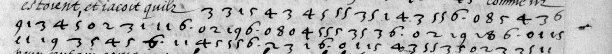
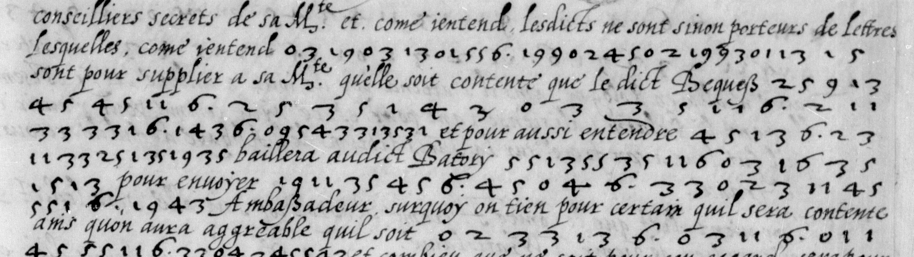
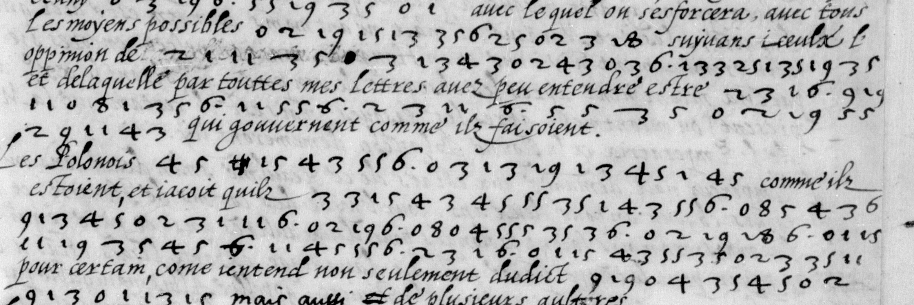
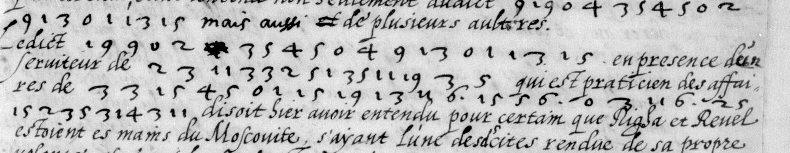
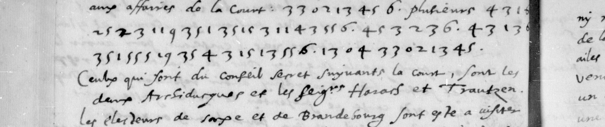

Deciphering L’Abbé’s 1577 letters to the Duke of Nevers

Introduction
Desiderio L’Abbé represented Catherine de' Medici at the court of Rudolph II, King of Bohemia and Holy Roman Emperor. In these letters, he writes to Louis de Gonzague, the Duke of Nevers, a protégé of Catherine's, and in effect the commander of the royal army in the French wars of religion. Sensitive details were obscured using a cipher that we have cracked, we think for the first time. In this collection, there are three letters. The first letter (from Prague) describes the latest news from the Rebellion of Danzig (Danzig, now Gdańsk, had rejected the election of Stephen Báthory to the Polish crown over Rudolph's father Maximilian II). The second and third letters, written on the same day and covering much of the same ground, concern the imperial court's arrival in Breslau (now Wrocław), developments from Danzig, and L’Abbé's suit to the Emperor on behalf of Nevers, in the matter of Nevers' inheritance dispute with his brother, the Duke of Mantua.
Sources
- Prague, 2 March 1577 · BnF Français 3198, no. 30
- Breslau, 2 May 1577 · BnF Français 3198, no. 37
- Breslau, 2 May 1577 · BnF Français 3198, no. 38
The cipher
The ciphertext consists of 991 digits, split between 30 distinct enciphered fragments, the longest of which (99 digits) is in the March letter, and one of which appears twice, once in each of the May letters.
The chief difficulty is that the strings of digits do not contain reliable boundaries, meaning a single letter or n-gram could be enciphered by one, two, or more digits. The best thing to do is to see if we can guess at any plaintext and work backwards to a key.
Three related fragments
We might expect (and indeed see) some degree of homophony, that is, more than one way to encipher the same character or symbol. However, there is clearly not enough to disguise the repetitions: examination of the ciphertext reveals three very similar strings.
2 3 1 1 3 3 2 5 1 3 5 1 9 3 5
1 1 3 3 2 5 1 3 5 1 9 3 5
2 3 1 1 3 3 2 5 1 3 5 1 1 1 9 3 5



All occur in the close vicinity of cleartext and as a result we can see that they almost certainly represent a name or a title. You don’t have to travel far down the list of candidates to try “(l’)empereur”: the “35” matches onto “r” very nicely.
231133251?35r19?35r“11” and “1” could both encipher “e”.
23?11e3325?1e35r1e9?35rAnd the rest follows quite nicely.
23l11e33m25p1e35r1e9u35r11e33m25p1e35r1e9u35r23l11e33m25p1e35r11e19u35rExtending the key
This correspondence also suggests the preponderance of two-digit symbols, with occasional one-digit symbols. All we have to do is use our key against some more ciphertext.
baillera audict Batory […] pour envoyer
will grant the aforesaid Báthory […] in order to send
551355?35r11e603?1e6?35r1513?Historical context makes this eminently guessable. Báthory’s campaign was about his legitimacy as a king.
55?13i55?35r11e6space03d1e6space35r15o13iOnly one letter makes sense as “55” here.
55t13i55t35r11e6space03d1e6space35r15o13ithe title of king
It gets ever easier as we guess correctly.
lopinion de […] et delaquelle
the opinion of […] and which
21?1e35r03d13i43?02?43?03d6space1e33m25p1e35r1e9u35r21f1e35r03d13i43n02a43n03d6space1e33m25p1e35r1e9u35rEmperor Ferdinand
Key
| Letter | Code |
|---|---|
| a | 02, 04 |
| b | 08 |
| c | 01 |
| d | 03 |
| e | 1, 11 |
| f | 21 |
| g | 31 |
| h | 09 |
| i / j / y | 3, 13 |
| l | 23 |
| m | 33 |
| n | 43 |
| o | 5, 15 |
| p | 25 |
| q | 07 |
| r | 35 |
| s | 45 |
| t | 55 |
| u / v | 9, 19 |
| x | 8, 18 |
| z | 29 |
| space | 6 |
A short example to illustrate:

33m02a13i45s6space43n1e6space25p23l11e9u35r1e35r15o3i11e43n55t6space45s3i23l6space43n13i6space35r1e55t5o19u35r43n15o13i55t6space13i04a33m02a13i45sbut several people would shed no tears if he never returned there